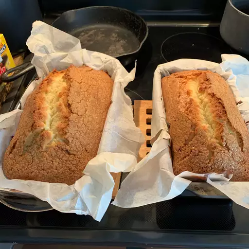

Grandma's Poundcake

Giving up my grandma's secret recipe, great for the holidays!!!
My meemaw had this recipe hidden all this time.
Now giving it out to the public so you can all try this greatness.
Ingredients
- 3 cups white sugar
- 2 cups butter, softened
- 6 large eggs
- 4 cups all-purpose flour
- ⅔ cup milk
Steps
- Preheat the oven to 350 degrees F (175 degrees C). Grease three 8x4-inch loaf pans, then line with parchment paper.
- Cream together sugar and butter in a large bowl with an electric mixer on medium speed until light and fluffy. Beat in eggs, one at a time, mixing well after each addition. Beat in flour alternately with milk, mixing just until incorporated. Pour batter evenly into the prepared loaf pans.
- Bake in the preheated oven until a toothpick inserted into the center of the cakes comes out clean, about 70 minutes.
- Run a small knife around the edges of each pan. Allow cakes to cool in the pans for 10 minutes, then invert, peel off the parchment, and cool completely on wire racks.